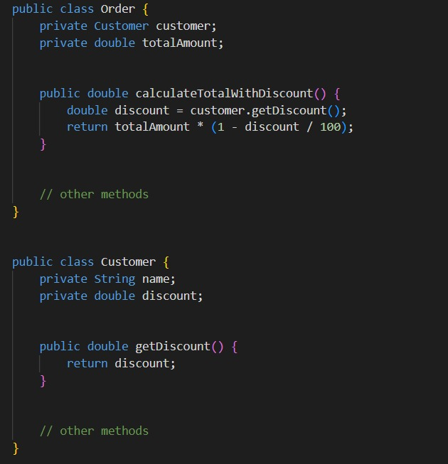
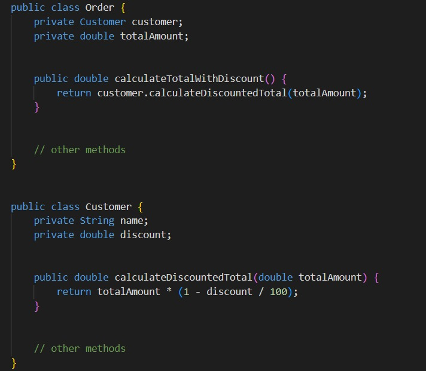
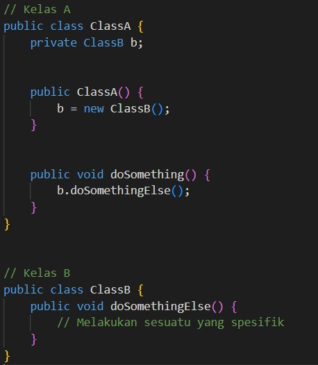
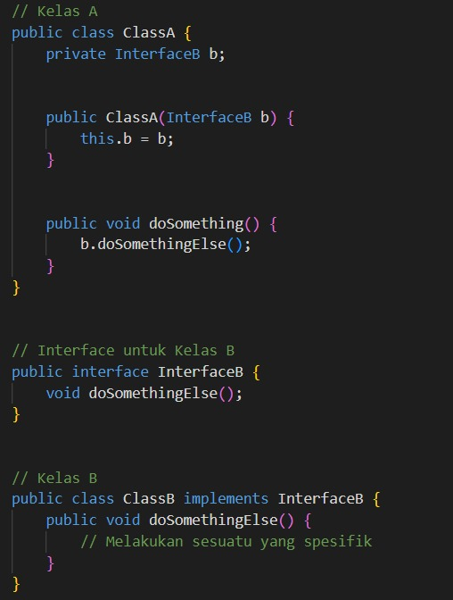
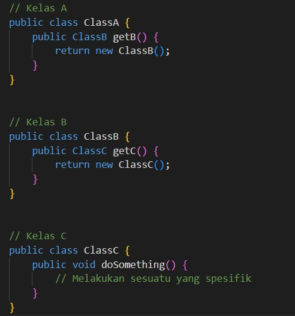
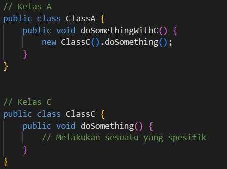
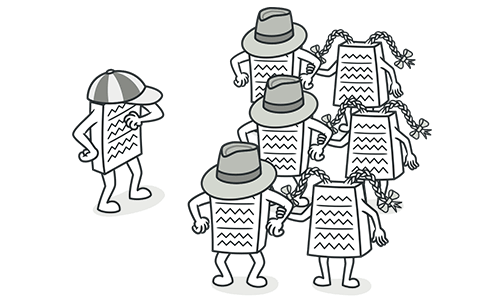
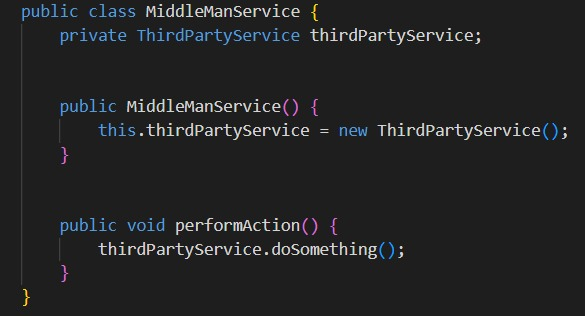
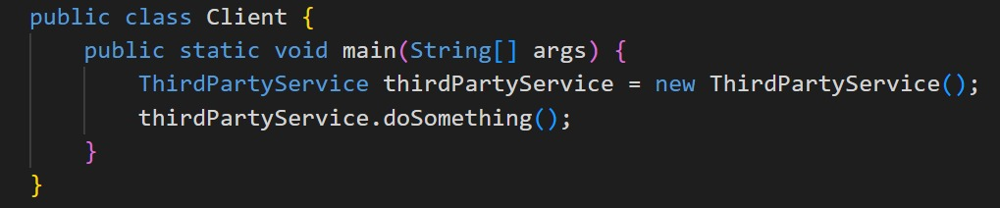

The Couplers
The Couplers adalah salah satu kategori dalam Code Smell yang mengacu pada keadaan di mana kelas atau komponen dalam sistem terlalu erat terikat satu sama lain. Ini dapat terjadi dalam bentuk ketergantungan yang berlebihan antara kelas atau modul, yang membuat perubahan pada satu bagian memerlukan modifikasi besar-besaran pada bagian lainnya. Coupling yang tinggi dapat membuat kode sulit dipahami, sulit dikelola, dan sulit diuji.
Couplers sering kali mengarah pada kurangnya abstraksi yang baik dan penggunaan prinsip-prinsip desain yang buruk dalam pengembangan perangkat lunak. Ini dapat menyebabkan kode yang rapuh dan sulit untuk diperbaiki atau diperbarui di masa depan.


Feature Envy
Feature Envy adalah bad code smell yang terjadi ketika sebuah objek menggunakan data atau metode dari objek lain lebih dari yang seharusnya. Ini menandakan bahwa objek tersebut "terlalu menyukai" atau terlalu bergantung pada objek lain, dan mungkin menunjukkan masalah dalam desain atau struktur program.
Kapan Terjadinya?
Feature Envy terjadi ketika sebuah objek mengakses atau menggunakan data dan metode dari objek lain secara berlebihan, tanpa melakukan banyak pekerjaan sendiri.
Cara Menangani?
Untuk menangani Feature Envy, Anda dapat memindahkan logika atau operasi yang terkait dengan objek yang "disukai" ke dalam objek yang seharusnya melakukan pekerjaan tersebut. Ini dapat dilakukan dengan menerapkan prinsip-prinsip pemrograman berorientasi objek seperti Encapsulation dan Delegation.
Contoh Sebelum Refactor :

Alasan :
1. Metode calculateTotalWithDiscount() pada kelas Order: Metode ini seharusnya bertanggung jawab untuk menghitung total pesanan dengan potongan harga. Namun, metode tersebut lebih tertarik pada data yang dimiliki oleh objek Customer daripada data miliknya sendiri. Ini menunjukkan bahwa Order tidak memiliki cukup kemandirian dan terlalu mengandalkan data dari objek Customer. Ini adalah contoh yang jelas dari "Feature Envy", di mana Order tampaknya lebih "menginginkan" atau "membutuhkan" data yang dimiliki oleh Customer daripada data yang dimilikinya sendiri.
2. Penggunaan customer.getDiscount() dalam calculateTotalWithDiscount(): Metode getDiscount() dipanggil dari objek customer dalam calculateTotalWithDiscount(). Hal ini menunjukkan bahwa Order "menyukai" fitur yang dimiliki oleh Customer, yaitu diskon, lebih dari yang seharusnya. Order seharusnya lebih fokus pada perhitungan total pesanan sendiri tanpa terlalu tergantung pada informasi internal Customer.
3. Penggunaan totalAmount dari Order dalam calculateTotalWithDiscount(): Metode tersebut menggunakan variabel totalAmount yang dimiliki oleh objek Order. Ini menunjukkan bahwa Order memberikan informasi internalnya kepada Customer, yang tidak ideal dari segi desain objek yang baik.
Contoh Sesudah Refactor :

Alasan Refactoring :
Logika perhitungan diskon dari kelas Order ke kelas Customer, sehingga Order tidak lagi memiliki "kesenangan fitur" terhadap Customer.
Inappropriate Intimacy

"Inappropriate Intimacy" adalah salah satu kategori dari "Bad Code Smell" dalam paradigma pemrograman. Ini terjadi ketika dua kelas atau modul saling bergantung secara berlebihan, melewati lebih banyak informasi atau tahu terlalu banyak tentang internal satu sama lain. Hal ini dapat mengakibatkan kode yang sulit dipahami, sulit dipelihara, dan sulit untuk mengubahnya di masa mendatang karena setiap perubahan pada satu kelas mempengaruhi banyak kelas lainnya.
Kapan Terjadinya?
Inappropriate Intimacy terjadi ketika ada terlalu banyak pertukaran data atau panggilan metode antara dua kelas yang seharusnya tidak terlalu erat terhubung.
Cara Menangani?
Untuk menangani masalah ini, Anda dapat menggunakan prinsip-prinsip desain yang lebih baik, seperti prinsip kohesi dan kelas terpisah (separation of concerns). Anda dapat menggunakan pola desain seperti Dependency Injection untuk mengurangi ketergantungan antar kelas. Pemisahan logika bisnis dari kode infrastruktur juga dapat membantu.
Contoh Sebelum Refactor :

Alasan :
Kelas A dan B terlalu erat terhubung karena kelas A langsung membuat instance kelas B dan memanggil metodenya. Hal ini menyebabkan kelas A bergantung pada implementasi internal kelas B.
Contoh Sesudah Refactor :

Alasan Refactoring :
Dalam kode refaktor, kelas A tidak lagi langsung tergantung pada kelas B. Sebaliknya, kelas A menerima kelas B sebagai interface. Ini memungkinkan kelas A untuk bekerja dengan berbagai implementasi kelas B, dan kelas A tidak perlu tahu detail internal kelas B. Hal ini meningkatkan fleksibilitas dan memisahkan kelas-kelas yang semula terlalu erat terhubung.
Message Chain
"Message Chain" adalah subkategori dari "Bad Code Smell" dalam paradigma pemrograman. Ini terjadi ketika kelas atau modul memanggil metode berantai pada objek lain, yang pada gilirannya memanggil metode pada objek lain lagi, dan seterusnya. Hal ini dapat menyebabkan ketergantungan yang terlalu dalam antara kelas-kelas tersebut dan membuat kode sulit dipahami.

Kapan Terjadinya?
Message Chain terjadi ketika sebuah kelas memanggil metode pada objek lain, yang kemudian memanggil metode pada objek lain lagi, dan seterusnya.
Cara Menangani?
Untuk menangani message chain, Anda dapat mempertimbangkan untuk menggunakan pola desain seperti Facade untuk menyembunyikan kompleksitas dari panggilan metode berantai. Anda juga dapat mempertimbangkan untuk membagi logika ke dalam kelas-kelas yang lebih kecil dan lebih spesifik.
Contoh Sebelum Refactor :

Alasan :
Kelas A memiliki method getB() yang mengembalikan objek kelas B, kemudian kelas B memiliki method getC() yang mengembalikan objek kelas C. Jika kita ingin melakukan sesuatu dengan kelas C, kita harus melewati objek kelas A dan B terlebih dahulu. Ini membentuk sebuah message chain yang tidak perlu dan dapat menyulitkan pemahaman kode.
Contoh Sesudah Refactor :

Alasan Refactoring :
Dalam kode refaktor, kelas A langsung menggunakan kelas C untuk melakukan sesuatu. Tidak perlu melewati kelas B terlebih dahulu. Ini menyederhanakan struktur dan menghilangkan message chain yang tidak perlu. Kode menjadi lebih mudah dipahami dan dipelihara.
Middle Man

Definisi
Middle Man adalah subkategori dari bad code smell yang terjadi ketika sebuah kelas bertindak sebagai mediator atau perantara yang tidak perlu antara kelas atau komponen lain.
Kapan Terjadinya?
Middle Man smells biasanya terjadi ketika sebuah kelas bertindak sebagai perantara atau mediator antara dua kelas lain, tanpa menambahkan fungsionalitas atau logika yang signifikan.
Cara Menangani?
1. Inline Methods: Jika metode-metode dalam kelas perantara hanya melakukan delegasi ke kelas lain, pertimbangkan untuk menghapus kelas perantara dan langsung memanggil metode-metode kelas target.
2. Extract Class: Jika kelas perantara melakukan beberapa logika selain delegasi, pertimbangkan untuk mengekstrak logika ini ke dalam kelas terpisah.
3. Replace Delegation with Inheritance: Dalam beberapa kasus, jika kelas perantara hanya melakukan delegasi ke kelas lain tanpa menambahkan logika tambahan, Anda mungkin mempertimbangkan untuk mengganti delegasi dengan pewarisan.
Contoh Sebelum Refactor :

Alasan :
Dalam kode ini, MiddleManService hanya melakukan delegasi panggilan metode ke ThirdPartyService, bertindak sebagai perantara tanpa menambahkan fungsionalitas yang signifikan.
Contoh Sesudah Refactor :

Alasan Refactoring :
Dalam kode yang sudah direfaktor, kelas MiddleManService dihilangkan sama sekali, dan klien langsung menggunakan ThirdPartyService, menghilangkan perantara yang tidak perlu. Refaktorisasi ini menyederhanakan basis kode dan menghilangkan bau perantara.